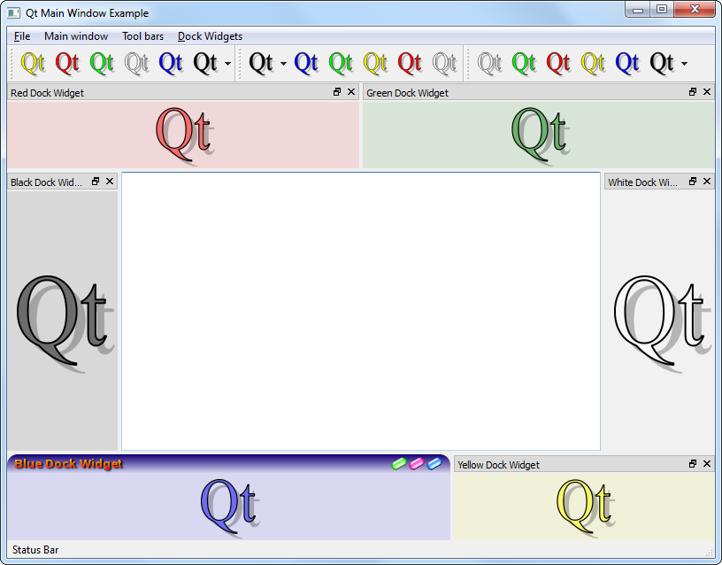

Main Window
The Main Window example shows Qt's extensive support for tool bars, dock windows, menus, and other standard application features.

Files:
- mainwindows/mainwindow/colorswatch.cpp
- mainwindows/mainwindow/colorswatch.h
- mainwindows/mainwindow/mainwindow.cpp
- mainwindows/mainwindow/mainwindow.h
- mainwindows/mainwindow/toolbar.cpp
- mainwindows/mainwindow/toolbar.h
- mainwindows/mainwindow/main.cpp
- mainwindows/mainwindow/mainwindow.pro
- mainwindows/mainwindow/mainwindow.qrc